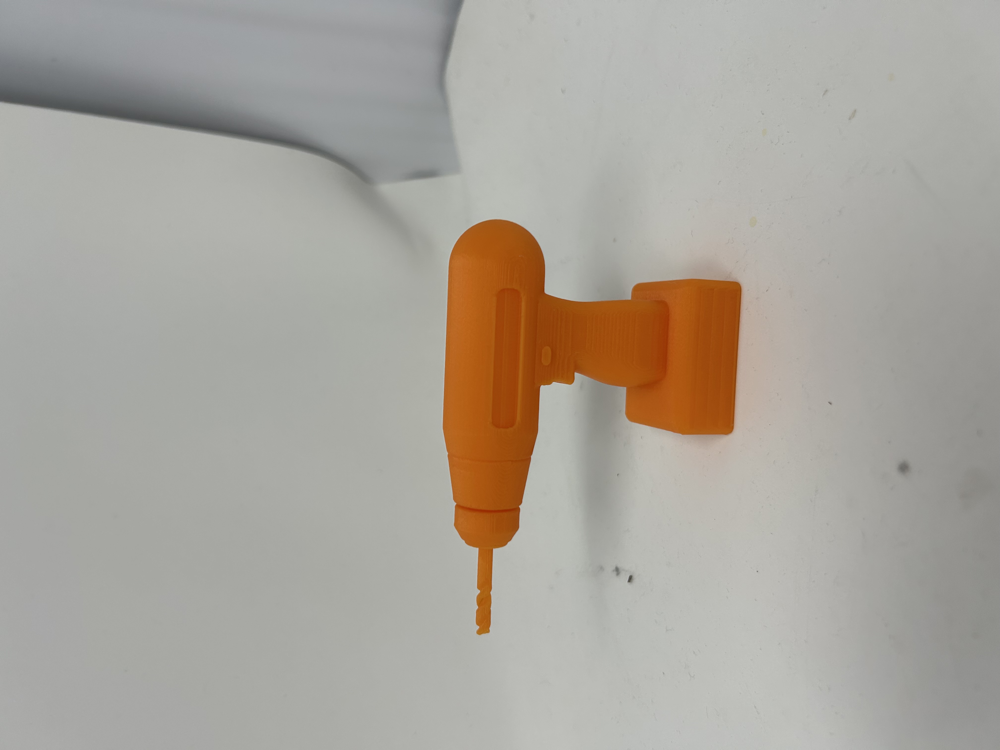
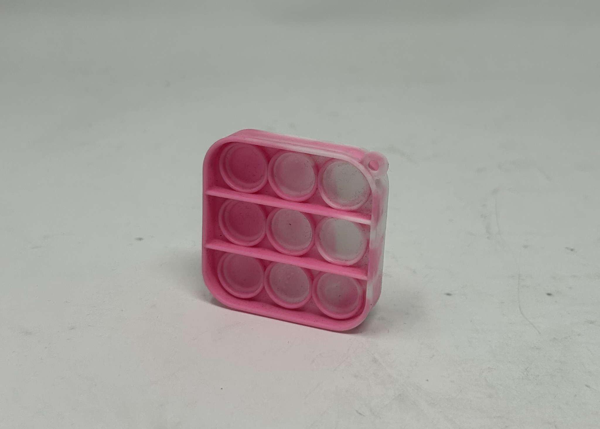
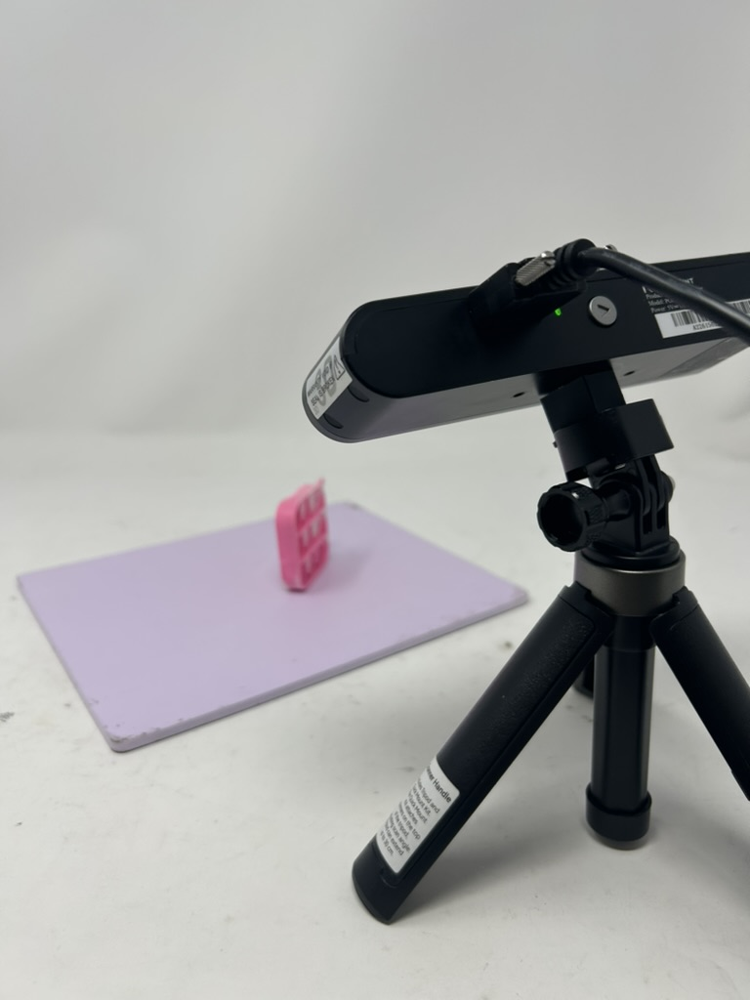

<div class="textcontainer">
<p class="margin"> </p>
<h3>Week 5: 3D Design & Printing</h3>
<h4>3D-Printed Power Drill</h4>
I designed a power drill in Fusion based on <a href="powerdrill_clipart.jpg" download="powerdrill_clipart.jpg"> this clipart image</a>, as well as used <a href="https://www.youtube.com/watch?v=KJ2ExGqncmk">this tutorial</a> for the actual drill bit.
I'm getting a lot better at CAD but unfortunately this still took me four hours with all the tweaking! Lots of lofting and *lots* of offset planes.
My original idea was to make really fun PS70 earrings and print out one powerdrill and another screwdriver (from Week 2) as earrings and loop some wire through them
but in my design, I realized that to honor the detail I put into them, I would have to print them far too large for any ear to hold. Alas, below is my
power drill. But, it worked first try! And the print job was only an hour and a half long. The worst part (as told by literally everyone) was removing the
supports, since those that were attached to the more flat parts of my screwdriver (like the side it was facing down on), was essentially another layer of plastic,
fused to the design rather than having some sort of air to pierce through and rip the supports off. The process had me impressed with the durability of the plastic though!
<p>
<iframe
src="https://www.viewstl.com/?embedded&url=https://raw.githubusercontent.com/ngoldstein24/powerdrill3D/main/powerdrill_stl.stl"
width="600"
height="400">
</iframe>
</p>
<p><p></p></p>
<p>You can download the 3D model <a href="power_drill.f3d" download="powerdrill.f3d">here</a>,
the STL file <a href="powerdrill_stl.STL" download="powerdrill.STL">here</a>, and
the sliced gcode file <a href="Noa_Goldstein_powerdrill_3D.bgcode" download="powerdrill.bgcode">here</a>. </p>
<h4>Scanning</h4>
I picked a push pop fidget toy that I found in the lab and within two scans using the tool we learned about in lab (excluding all the failed attempts), was able to piece it together. I used the manual aligment tool because it couldn't automatically merge the two scans.
The fill tool was also very useful! I messed around with the percentages and could well do with 60% but used 80% in the end. For some reason, the merge tool introduced holes again, which was confusing,
but I cleaned up the edges and you can see the the final scan <a href="noa_popit.stl" download="push_pop_scan.stl">here</a>. This was very fidgety though so I'm wondering when I would ever use it in this course instead of CAD.
<p><p></p>
<p></p>
</p>
<p>You can download the STL file <a href="noa_popit.stl" download="noa_popit.stl">here</a>.<p>
<h5>You can access my discussion on the final project <a href="../13_finalproject/index.html">here</a>.</h5>
</div>